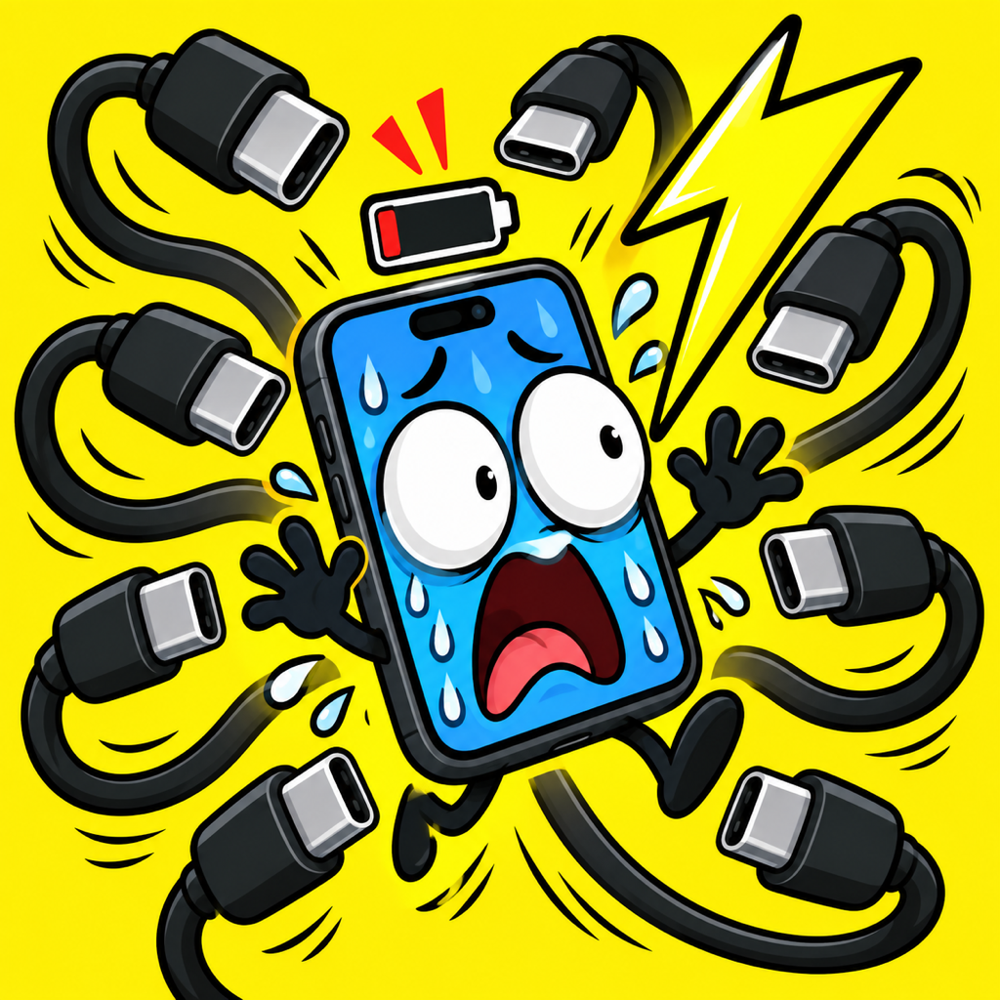

どうやって遊ぶ？
画面下のプラグを指で動かし、動くスマホの充電口に合わせて離してください。成功するとゲーム内ゲージが回復します。救出台数が増えるほど難しくなります。

充電させろ！充電させろ！ / iPhoneゲーム
遊び方、お問い合わせ、データの取り扱いをまとめました。
メールで問い合わせる画面下のプラグを指で動かし、動くスマホの充電口に合わせて離してください。成功するとゲーム内ゲージが回復します。救出台数が増えるほど難しくなります。
ゲーム内の演出です。実際の電池を充電したり、充電速度を上げたりする機能はありません。通常プレイに充電器は不要です。
アプリ内のスピーカーボタン、iPhoneの消音設定と音量を確認してください。動作が不安定な場合はアプリを開き直してください。発熱時はプレイを中断してください。
PRIVACY POLICY
更新日：2026年9月21日 / 運営：ガジェ⌘ガジェット伝道師(@gadget_man_n)
「充電させろ！」は、同意を得たうえでiOSの標準機能から電池残量と充電状態を読み取ります。ゲームの進行や演出に使用し、端末内だけで処理します。電池情報の履歴は保存せず、開発者や第三者へ送信しません。
電池情報の利用に対する同意の状態と自己ベストを、アプリ専用の端末内領域に保存します。再起動後も設定と記録を引き継ぐために使用します。
本アプリは電池情報やゲーム記録を外部へ送信しません。広告SDK、アクセス解析SDK、トラッキング、アカウント登録の機能はありません。OSによるバックアップと復元は、端末の設定とAppleの取り扱いに従います。
アプリの「？」から「利用への同意を取り消す」を選ぶと、電池情報の取得を停止します。保存済みの同意と記録は、アプリを削除すると端末から消去されます。OSのバックアップから復元した場合は、記録が戻ることがあります。
メールでいただいたアドレスとお問い合わせ内容は、対応に必要な範囲で使用します。不要になった情報は適切に削除します。お問い合わせ対応以外の目的で第三者に提供しません。ただし、法令に基づく場合を除きます。
このサイトに独自の広告・アクセス解析ツールは設置していません。サイトの配信やメールの提供に伴う処理は、各サービス提供者のプライバシーポリシーに従います。
データの扱いを変更する場合は本ポリシーを更新し、必要に応じてアプリ内で説明や同意の取得を行います。